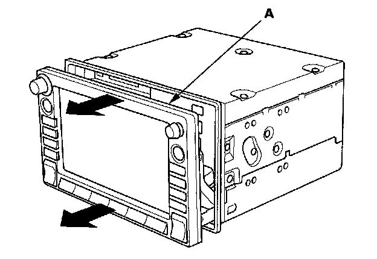
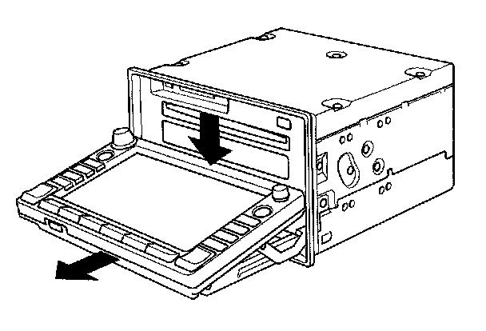
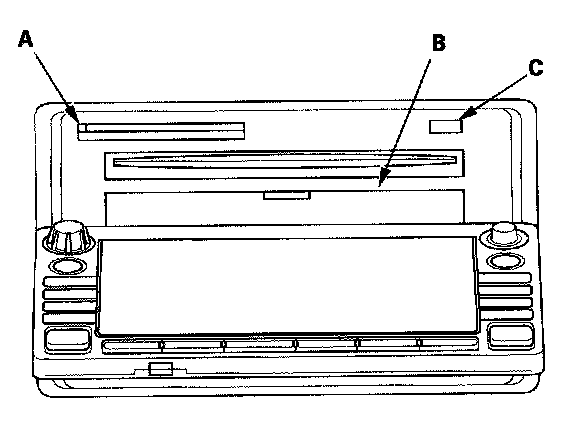

CD, DVD, and PC Card Removal/Installation
CD, DVD, and PC Card Removal/InstallationIf the display will not open, use this procedure to manually open the display and remove the CD, DVD, and or the PC card.
1. Remove the navigation unit from the vehicle.

2. On the bench, carefully pull the display (A) straight out (about 1/2 inch).

3. Fold down the display as shown in the diagram.

4. Push the PC Card eject button (A) to eject the customer's PC Card (if installed). Power is not required for this function.
5. Open the plastic cover (B) for the navigation DVD slot. Do not remove the plastic cover.
6. With the display open, temporarily reconnect the unit in the dash (to power it up).
7. Push the CD "eject" button (C), and navigation DVD "eject" button and remove the discs (holding the discs by their edges to avoid fingerprints). To avoid scratches, place the navigation DVD, and customer's CD in a jewel case if available.
8. Close the plastic cover that hides the navigation DVD slot.
9. Close the display by first returning the display to the upward position, and then pushing the entire display straight back into the unit.
10. After installing the new navigation unit, re-insert the navigation DVD, the customer's CD, and PC Card.